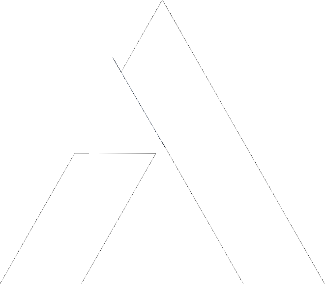

anologe.Most TikTok ad campaigns ask you to choose an objective: traffic, video views, conversions. GMV Max skips that choice. It is a single, automated campaign type built specifically for TikTok Shop sellers, and it optimizes directly for Gross Merchandise Value, the total sales value a shop's product catalog can generate within a given budget, rather than for clicks, views, or reach along the way.
That distinction matters because it changes what "good performance" looks like while a campaign is running. A traditional campaign might show strong click-through rates that never convert. GMV Max is built to ignore vanity signals and shift spend toward whatever combination of product, audience, and creative is actually driving revenue in near real time.
A GMV Max campaign pulls creative from two sources at once: paid ad creative uploaded specifically for the campaign, and organic shoppable content that is already performing on the shop's TikTok account. The algorithm then tests combinations of creative, audience segment, and product placement, and continuously reallocates budget toward whichever combination is converting best.
Because targeting and bidding are fully automated, sellers don't set manual bids or audience parameters the way they would in a classic campaign. The tradeoff is that campaign performance becomes almost entirely dependent on the quality of the inputs: clean data and a steady supply of content to test.
Because the algorithm handles targeting and bidding, the seller's real leverage sits in two places:
Clean pixel and catalog data. GMV Max needs to know, unambiguously, what "a sale" looks like for a given shop. If pixel events fire inconsistently, or product data in the catalog is incomplete or mismatched, the algorithm is optimizing against noisy signal. This is the single most common reason a GMV Max campaign underperforms relative to its budget, and it is invisible from the ads dashboard alone, since the campaign will still spend and still report some conversions. See our TikTok Pixel Setup Guide for how to verify this before launch.
A steady supply of new shoppable content. GMV Max tests creative continuously, and top performers eventually fatigue as the same audience segments see them repeatedly. Shops that treat content as a one-time setup step tend to see GMV Max performance plateau or decline after the first few weeks, while shops that keep feeding new organic and paid content into the pool see more consistent results over time.
In one Anologe-managed account, a GMV Max campaign returned $11,340 in revenue on $1,213 of ad spend over seven days, a 9.35× return, generating 244 orders. The result was driven largely by groundwork that happened before the campaign launched: pixel events had already been installed and verified individually in TikTok's Event Manager, so the algorithm had clean data to optimize against from day one rather than spending its first week learning through noisy signal.
This is consistent with what we see across accounts: the campaigns that perform well in week one are almost always the ones where pixel and catalog work was treated as its own deliverable, not an assumed prerequisite. See the full 9.35× ROI case study for the complete breakdown.
Launching a campaign before verifying every pixel event individually is the most frequent one. A pixel that appears "installed" in the dashboard can still fire ViewContent or Purchase events inconsistently, with mismatched values, or not at all on certain devices or checkout paths, and none of that shows up unless each event is checked in Event Manager.
The second is under-funding the learning phase. GMV Max, like most automated ad systems, needs a minimum volume of spend and conversions to exit learning and start optimizing efficiently. Campaigns launched with very small daily budgets tend to stay in a semi-learning state indefinitely, with inconsistent day-to-day results.
The third is treating content as a launch task rather than an ongoing input. A campaign that starts strong on a handful of ad creatives will usually see performance decline within a few weeks if nothing new is added to the pool.
The sequence that tends to produce the fastest, most reliable results is: verify pixel and catalog data first, launch with a budget sufficient to clear the learning phase, and commit to a content cadence before the campaign goes live rather than after performance starts to slip. For platform-level specifics beyond strategy, TikTok's own GMV Max documentation covers the mechanics in more technical detail.
Get My Free TikTok Shop Growth Audit
Related: TikTok Pixel Setup Guide · TikTok Shop vs. Traditional E-commerce · 9.35× ROI Case Study
Sources: TikTok Ads Help: GMV Max, TikTok Shop Seller Academy.